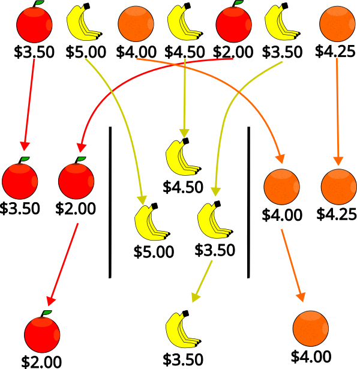

Groupby – a new way to accumulate facts in DRL

Have you ever wanted to accumulate facts that share a particular property (for instance, the count of people in each department) in DRL? With the addition of groupby to DRL, it is easier to write rules that divide facts into groups where each group is accumulated separately. In this post, we’ll explain what groupby is, how to use it, and give examples of groupby usage.
What is groupby?
Groupby is a new syntax construct introduced in 8.41.0.Final for dividing facts into groups, allowing each group to be accumulated separately. It has the following syntax:
groupby(source-pattern; grouping-key; accumulators [; constraints])Where:
source-pattern: Pattern used to gather facts that will be grouped and accumulated. For instance, using$a: /applicants[age < 21]as thesource-patternwould group and accumulate allApplicantsunder the age of 21 (binding the applicant to$a, which can be used in thegrouping-keyandaccumulators).
source-pattern, but the traditional syntax is also supported. For more details, see the Rule Language Reference.grouping-key: A function used to divide thesource-patterninto separate groups. Facts fromsource-patternfor whichgrouping-keyreturns the same value are grouped together. The key can optionally be bound to a variable, allowing it to be used outside thegroupby. For example, using$country: $a.countryas the grouping key would group applicants by country, binding the country for the group to the$countryvariable.accumulators: One or more accumulate functions used to accumulate the facts in each group. Each accumulate function can optionally be bound to a variable, allowing it to be used outside thegroupby. For instance,$count: count()would count the number of applicants younger than 21 from each country.constraints: Optional constraints on the group key and accumulation result. The rest of the rule will only execute for the given group key if all constraints returntrue. For instance,$count >= 100would only continue execution of the rule for a given$countryif that country have at least 100 applicants younger than 21.
Combining the above example together, we get:
groupby(
$a: /applicants[age < 21];
$country: $a.country;
$count: count();
$count >= 100
)How to use groupby
You can use groupby by upgrading Drools to 8.41.0.Final or later. Groupby can then be used in your DRL files like any other language construct (such as forall and accumulate).
Example groupby usage
Groupby is a good choice whenever you need to accumulate results for separate groups. Some examples of rules that can be implemented with it include:
- Get departments over budget
rule "Departments over budget"
groupby($order: /order;
$department: $order.department;
$totalCost: sum($order.cost);
$totalCost > $department.budget
)
then
// ...
end- Find days which are understaffed
rule "Understaffed Days"
groupby($shift: /shifts[ employee != null ];
$date: $shift.date;
$assignedCount: count();
$assignedCount < $date.minimumAssignedShifts
)
then
// ...
end- Get the highest bid for a product
rule "Highest bid for a product"
groupby($bid: /bids;
$product: $bid.product;
$highestBid: max($bid)
)
then
// ...
endConclusion
Groupby is a new language feature introduced in 8.41.0.Final that allows for simpler grouping of objects by a key function. You can use it by upgrading Drools to 8.41.0.Final or later. Groupby is useful for implementing rules that accumulate facts that share a given property, such as getting the total cost by department or getting the highest bidder by product.